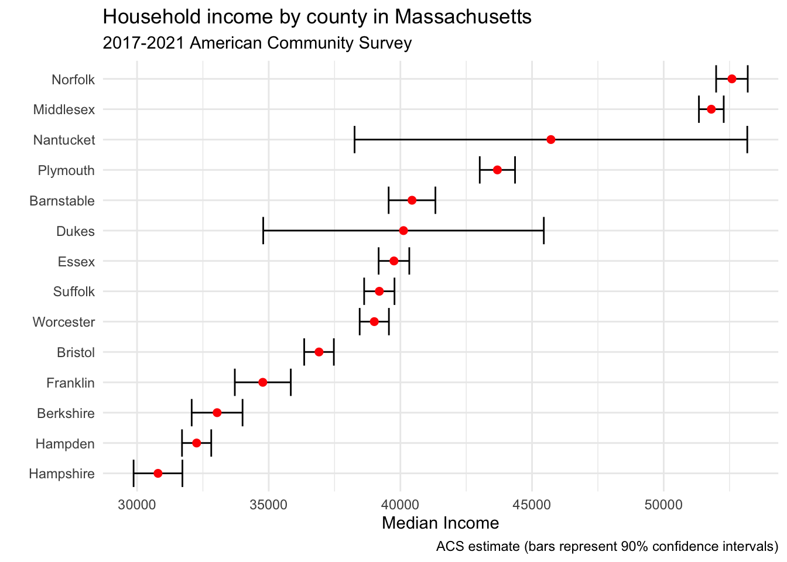

library(tidycensus)
census_api_key("YOUR API KEY") # enter your census api key here in quotesModule 4.1
Making Tables
Prework
- Get a U.S. Census api key
- Install tidycensus to retrieve the data we will use
- Install kableExtra and gt, out packages for making tables
- install
webshot2for exportinggttables
install.packages(c("tidycensus", "kableExtra", "gt", "webshot2"))
- We will be using the stringr package, which is part of the Tidyverse, so you probably already have it installed. But spend some time reading about its usage and features.
- Install
webshot2for the purposes of saving a .png of your table (install.packages("webshot2"))
Overview
This week we are going to be talking about making tables in R. Tables can be a great way to summarize data for your audience. While there are no hard and fast rules about when to use a table versus a plot, typically we use tables when we want to present summary statistics that we want to compare across groups or when we want to show the precise values for individual data points. This can be true when we have a small number of cases that we want to discuss.
In this module we are going to be working with the tidycensus package to download income data from the American Community Survey (ACS) and the kableExtra and gt packages to visualize it. Along the way, we discuss “the grammar of tables” and some situations where a table would be less appropriate than other methods of visualizing our data.
Working with tidycensus
We are going to start by using tidycensus to download some income data. To use tidycensus you need a Census API key, which you can get here.
Use the load_variables() function to import data from the census or ACS for a particular year. There is a cache = TRUE option if you want to cache the data for faster retrieval in the future. We can save our data in an object called v21 and then click on it or use View() and the search function in the data frame viewer to see what data are available.
v21 <- load_variables(2021, "acs5", cache = TRUE)
#View(v21)We want data on income quintiles, so let’s search for “quintile” in the search field. From there we use get_acs() to retrieve the data based on the codes for the five quintiles and the top five percent of earners.
In our call, we specify “state” as the geography and “2021” as the year. This will ensure that data from the 2017-2021 ACS is retrieved. Note that by default, tidycensus returns data such that rows represent a unit-variable combination. To get the data with census variables in the columns, we have to specify wide form with output = "wide". We will select all of the variables except for the margin of error and GEOID. Let’s rename NAME so it is in lower case. And for some reason, tidycensus puts an “E” suffix at the end of all of our variables when we specify wide format, so let’s use rename_with() and str_remove from the [stringr] package to get rid of that suffix. We will save the data frame in an object called quintiles.
library(stringr)
library(dplyr)
quintiles <- get_acs(geography = "state",
variables = c(q1 = "B19081_001",
q2 = "B19081_002",
q3 = "B19081_003",
q4 = "B19081_004",
q5 = "B19081_005",
top5 = "B19081_006"),
year = 2021,
output = "wide") |>
select(
!ends_with("M"), # eliminate margin of error
-GEOID) |> # eliminate geo id
rename(name = NAME) |>
rename_with(~str_remove(., 'E'))
glimpse(quintiles)Rows: 52
Columns: 7
$ name <chr> "Alabama", "Alaska", "Arizona", "Arkansas", "California", "Colora…
$ q1 <dbl> 11602, 19344, 15486, 12076, 17433, 18963, 17417, 17052, 12971, 14…
$ q2 <dbl> 31928, 51030, 40774, 31051, 49234, 49711, 48870, 44638, 51060, 37…
$ q3 <dbl> 55270, 81169, 66384, 52280, 84658, 80679, 84042, 73187, 94478, 62…
$ q4 <dbl> 88640, 122652, 102299, 82811, 134560, 123359, 133488, 111915, 157…
$ q5 <dbl> 193311, 242097, 223521, 188510, 309857, 264516, 319533, 238612, 3…
$ top5 <dbl> 336788, 394694, 395620, 344470, 555007, 466181, 602707, 420859, 6…Explore the data with kableExtra
Now let’s use some dplyr slice functions and kableExtra to subset and explore the data. First let’s see which are the wealthiest states. To do this, we can apply slice_max() to identify the states with the highest incomes among the top 5 percent of wage earners. We will save that list as an object called top_10 and then call kable() to view it.
library(kableExtra)
top_10 <- quintiles |>
slice_max(top5, n = 10)
kable(top_10)| name | q1 | q2 | q3 | q4 | q5 | top5 |
|---|---|---|---|---|---|---|
| District of Columbia | 12971 | 51060 | 94478 | 157803 | 375792 | 670768 |
| Connecticut | 17417 | 48870 | 84042 | 133488 | 319533 | 602707 |
| New York | 14054 | 42220 | 75647 | 123318 | 302676 | 574063 |
| New Jersey | 18458 | 52339 | 90337 | 142858 | 319140 | 562886 |
| Massachusetts | 16812 | 50519 | 89602 | 142491 | 316447 | 558616 |
| California | 17433 | 49234 | 84658 | 134560 | 309857 | 555007 |
| Maryland | 19946 | 55165 | 91725 | 140353 | 293979 | 503597 |
| Washington | 19367 | 50803 | 82817 | 127003 | 277165 | 487950 |
| Virginia | 17922 | 48359 | 81072 | 127411 | 280299 | 486006 |
| Illinois | 15102 | 42688 | 72900 | 114531 | 258373 | 466713 |
Now let’s do the same thing but searching for the poorest states instead. We will use the slice_min() function to identify the states with the lowest incomes in the first quintile of earners.
| name | q1 | q2 | q3 | q4 | q5 | top5 |
|---|---|---|---|---|---|---|
| Puerto Rico | 2906 | 12144 | 22163 | 38397 | 99043 | 187234 |
| Mississippi | 10096 | 27963 | 49418 | 80125 | 175581 | 308523 |
| Louisiana | 10371 | 29781 | 53925 | 89536 | 201514 | 357026 |
| New Mexico | 11058 | 31274 | 54295 | 86905 | 188282 | 323568 |
| West Virginia | 11120 | 29606 | 51038 | 81393 | 174019 | 299882 |
| Alabama | 11602 | 31928 | 55270 | 88640 | 193311 | 336788 |
| Kentucky | 11846 | 32616 | 55838 | 88089 | 194168 | 350411 |
| Arkansas | 12076 | 31051 | 52280 | 82811 | 188510 | 344470 |
| South Carolina | 12680 | 34881 | 58665 | 92118 | 207367 | 374427 |
| District of Columbia | 12971 | 51060 | 94478 | 157803 | 375792 | 670768 |
OK now let’s make a table with a selection of states that reflects the full range of household incomes. So first, we will use slice_min() and slice_max() without arguments to select the state with the poorest households in q1 and the state with the wealthiest households in top5. The we will use slice_sample() to take a random sample of five additional states.
We will store these selections in three objects and then combine them into a single data frame called states using the dplyr function bind_rows. bind_rows() appends data frames with different observations for the same set of columns. You can think of its a kind of “verticle merging” of data frames.
After we have done the append, we can view the new data by calling kable(states).
# lowest
state_min <- quintiles |>
slice_min(q1)
# highest
state_max <- quintiles |>
slice_max(top5)
# randomly select five more
five_more <- quintiles |>
slice_sample(n = 5)
states <- bind_rows(state_min, state_max, five_more) |>
arrange(desc(top5))
kable(states)| name | q1 | q2 | q3 | q4 | q5 | top5 |
|---|---|---|---|---|---|---|
| District of Columbia | 12971 | 51060 | 94478 | 157803 | 375792 | 670768 |
| District of Columbia | 12971 | 51060 | 94478 | 157803 | 375792 | 670768 |
| Delaware | 17052 | 44638 | 73187 | 111915 | 238612 | 420859 |
| Alaska | 19344 | 51030 | 81169 | 122652 | 242097 | 394694 |
| Nebraska | 16506 | 41590 | 66977 | 100910 | 213091 | 378679 |
| Puerto Rico | 2906 | 12144 | 22163 | 38397 | 99043 | 187234 |
| Puerto Rico | 2906 | 12144 | 22163 | 38397 | 99043 | 187234 |
Display the data with a gt table
Now that we have some good data for a table, let’s make a really beautiful table with the gt package. “gt” stands for “grammar of tables.” So just as we talked about a “grammar of graphics” when we were studying plots, we can talk about the “grammar of tables” and break a table down into its component parts.
gt envisions six main parts of a table that can be customized in various ways. The table header includes the title and possibly a subtitle. Next, we have the stub section that contains our row labels and, above that, a stubhead label, which we could use to provide more information about what is in the rows. Then, we have column labels that tell us about what is in each column and the table body which contains the actual data that we want to present. Finally, we have the table footer, which would contain any notes that we have about information contained in the table as well as information about sources. Check out the gt function reference to get a sense of all the customizations available.
Let’s go ahead and start out by making a basic gt table with a title, subtitle, column labels, source note and format the numbers as dollar figures.
Make a good gt table
library(gt)
goodtable <- gt(states) |>
tab_header(
title = "Mean Household Income of Quintiles, 2021",
subtitle = "Seven Representative U.S. States"
) |>
cols_label(
name = "",
q1 = "lowest",
q2 = "second",
q3 = "third",
q4 = "fourth",
q5 = "highest",
top5 = "top 5%"
) |>
fmt_currency(
columns = c(q1:top5),
currency = "USD",
use_subunits = FALSE
) |>
# note that you can use markdown (md) to format the source note for html documents
tab_source_note(source_note = md("**Source**: US Census Bureau, American Community Survey"))
goodtable| Mean Household Income of Quintiles, 2021 | ||||||
|---|---|---|---|---|---|---|
| Seven Representative U.S. States | ||||||
| lowest | second | third | fourth | highest | top 5% | |
| District of Columbia | $12,971 | $51,060 | $94,478 | $157,803 | $375,792 | $670,768 |
| District of Columbia | $12,971 | $51,060 | $94,478 | $157,803 | $375,792 | $670,768 |
| Delaware | $17,052 | $44,638 | $73,187 | $111,915 | $238,612 | $420,859 |
| Alaska | $19,344 | $51,030 | $81,169 | $122,652 | $242,097 | $394,694 |
| Nebraska | $16,506 | $41,590 | $66,977 | $100,910 | $213,091 | $378,679 |
| Puerto Rico | $2,906 | $12,144 | $22,163 | $38,397 | $99,043 | $187,234 |
| Puerto Rico | $2,906 | $12,144 | $22,163 | $38,397 | $99,043 | $187,234 |
| Source: US Census Bureau, American Community Survey | ||||||
Change column width
Now let’s add some further customization. One thing to pay attention to is the column width. Too narrow of columns can make it difficult to read the information, while too wide of columns can cause the table not to fit on the page. We can adjust the column width of our table with the cols_width() function.
vgoodtable <- goodtable |>
cols_width(c(q1:top5) ~ px(90))
vgoodtable| Mean Household Income of Quintiles, 2021 | ||||||
|---|---|---|---|---|---|---|
| Seven Representative U.S. States | ||||||
| lowest | second | third | fourth | highest | top 5% | |
| District of Columbia | $12,971 | $51,060 | $94,478 | $157,803 | $375,792 | $670,768 |
| District of Columbia | $12,971 | $51,060 | $94,478 | $157,803 | $375,792 | $670,768 |
| Delaware | $17,052 | $44,638 | $73,187 | $111,915 | $238,612 | $420,859 |
| Alaska | $19,344 | $51,030 | $81,169 | $122,652 | $242,097 | $394,694 |
| Nebraska | $16,506 | $41,590 | $66,977 | $100,910 | $213,091 | $378,679 |
| Puerto Rico | $2,906 | $12,144 | $22,163 | $38,397 | $99,043 | $187,234 |
| Puerto Rico | $2,906 | $12,144 | $22,163 | $38,397 | $99,043 | $187,234 |
| Source: US Census Bureau, American Community Survey | ||||||
Change font
Next we want to make sure that the fonts that we use are legible and accessible, just like we did for our charts. We can do this with opt_table_font().
greattable <- vgoodtable |>
opt_table_font(font = "verdana")
greattable| Mean Household Income of Quintiles, 2021 | ||||||
|---|---|---|---|---|---|---|
| Seven Representative U.S. States | ||||||
| lowest | second | third | fourth | highest | top 5% | |
| District of Columbia | $12,971 | $51,060 | $94,478 | $157,803 | $375,792 | $670,768 |
| District of Columbia | $12,971 | $51,060 | $94,478 | $157,803 | $375,792 | $670,768 |
| Delaware | $17,052 | $44,638 | $73,187 | $111,915 | $238,612 | $420,859 |
| Alaska | $19,344 | $51,030 | $81,169 | $122,652 | $242,097 | $394,694 |
| Nebraska | $16,506 | $41,590 | $66,977 | $100,910 | $213,091 | $378,679 |
| Puerto Rico | $2,906 | $12,144 | $22,163 | $38,397 | $99,043 | $187,234 |
| Puerto Rico | $2,906 | $12,144 | $22,163 | $38,397 | $99,043 | $187,234 |
| Source: US Census Bureau, American Community Survey | ||||||
Center
Then we want to check to make sure that information is aligned properly in the table. We can use right, left or center justify our text, depending on its purpose, by calling cols_align().
vgreattable <- greattable |>
cols_align(
align = "center",
columns = q1:top5
)
vgreattable| Mean Household Income of Quintiles, 2021 | ||||||
|---|---|---|---|---|---|---|
| Seven Representative U.S. States | ||||||
| lowest | second | third | fourth | highest | top 5% | |
| District of Columbia | $12,971 | $51,060 | $94,478 | $157,803 | $375,792 | $670,768 |
| District of Columbia | $12,971 | $51,060 | $94,478 | $157,803 | $375,792 | $670,768 |
| Delaware | $17,052 | $44,638 | $73,187 | $111,915 | $238,612 | $420,859 |
| Alaska | $19,344 | $51,030 | $81,169 | $122,652 | $242,097 | $394,694 |
| Nebraska | $16,506 | $41,590 | $66,977 | $100,910 | $213,091 | $378,679 |
| Puerto Rico | $2,906 | $12,144 | $22,163 | $38,397 | $99,043 | $187,234 |
| Puerto Rico | $2,906 | $12,144 | $22,163 | $38,397 | $99,043 | $187,234 |
| Source: US Census Bureau, American Community Survey | ||||||
Add borders and lines
Finally, we want to think about how to use borders and lines to separate and identify different elements of the table using tab_options() like this.
awesometable <- vgreattable |>
tab_options(
table.border.top.color = "black",
table.border.bottom.color = "black",
heading.border.bottom.color = "black",
column_labels.border.bottom.color = "black",
table_body.border.bottom.color = "black"
)
awesometableExport your table
Now try exporting your table as .png file with the gtsave() function.
gtsave(awesometable, "awesometable.png")When a plot is better than a table
Be judicious with your use of tables. You would not want to use tables where a plot is more appropriate. For example you would not want to use a table to show a trend over time (a line chart would be more appropriate) or to display the relationship between two variables (where a scatter plot would be more appropriate).
Another case where a table would be less effective than a plot is in showing estimates, margins of error and confidence intervals. Let’s do an example with median income estimates. We can start by searching for “median income” and discover that the code for median income is B06011_001. Let’s use that to extract the median income for counties in the state of Massachusetts.
library(janitor)
mass_med_inc <- get_acs(
geography = "county",
variables = c(median_income = "B06011_001"),
state = "MA",
year = 2021
) |>
mutate(
lower_90 = estimate - moe,
upper_90 = estimate + moe
) |>
clean_names() |>
mutate(name = str_replace_all(name, " County, Massachusetts", "")) |>
select(name, estimate, lower_90, upper_90)
glimpse(mass_med_inc)Rows: 14
Columns: 4
$ name <chr> "Barnstable", "Berkshire", "Bristol", "Dukes", "Essex", "Fran…
$ estimate <dbl> 40442, 33040, 36910, 40119, 39756, 34775, 32262, 30795, 51808…
$ lower_90 <dbl> 39554, 32074, 36347, 34791, 39174, 33712, 31707, 29868, 51337…
$ upper_90 <dbl> 41330, 34006, 37473, 45447, 40338, 35838, 32817, 31722, 52279…We can select the county name, median income estimate and the upper and lower confidence intervals and put those in a table.
kable(mass_med_inc)| name | estimate | lower_90 | upper_90 |
|---|---|---|---|
| Barnstable | 40442 | 39554 | 41330 |
| Berkshire | 33040 | 32074 | 34006 |
| Bristol | 36910 | 36347 | 37473 |
| Dukes | 40119 | 34791 | 45447 |
| Essex | 39756 | 39174 | 40338 |
| Franklin | 34775 | 33712 | 35838 |
| Hampden | 32262 | 31707 | 32817 |
| Hampshire | 30795 | 29868 | 31722 |
| Middlesex | 51808 | 51337 | 52279 |
| Nantucket | 45717 | 38260 | 53174 |
| Norfolk | 52591 | 51991 | 53191 |
| Plymouth | 43684 | 43014 | 44354 |
| Suffolk | 39200 | 38624 | 39776 |
| Worcester | 39009 | 38454 | 39564 |
But this is not very compelling. So instead, we can plot confidence intervals with ggplot using a combination of geom_errorbar() and geom_point().
library(ggplot2)
mass_med_inc |>
ggplot(aes(x = estimate, y = reorder(name, estimate))) +
geom_errorbar(aes(xmin = lower_90, xmax = upper_90)) +
geom_point(color = "red", size = 2) +
labs(title = "Household income by county in Massachusetts",
subtitle = "2017-2021 American Community Survey",
y = "",
x = "Median Income",
caption = "ACS estimate (bars represent 90% confidence intervals)") +
theme_minimal()
This conveys a lot more information relative to a table.